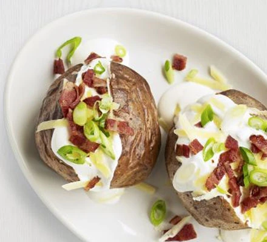

Baked Potato

Description
Make the perfect jacket potato – crispy on the outside and meltingly soft in the middle
Ingredints
- 2 tsp olive oil
- 4 large baking potatoes
- 200ml soured cream
Plus any or all of the following
- 50g cheddar, grated
- 4 crispy bacon rashers, chopped
- 4 spring onions, thinly sliced
Steps
- Heat the oven to 220C/200C fan/gas 7. Rub the olive oil over the potatoes and put on the top shelf of the oven. Bake for 20 mins.
- Turn down the oven to 190C/170C fan/gas 5 and bake for 45 mins-1 hr until the skin is crisp and the flesh soft.
- Cut a cross on top of each potato, squeeze the sides, add the soured cream and your favourite toppings.